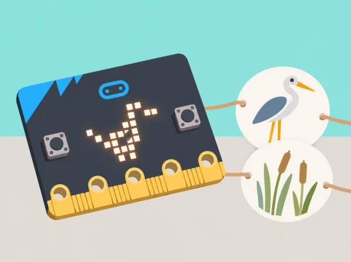

La classe prepara una microexposició digital de l’aiguamoll de l’Albufera. Cada equip parteix d’una imatge o observació autoritzada de fauna o vegetació, n’identifica un tret recognoscible i el transforma primer en una icona 5 × 5 i després en una animació de dos fotogrames. La placa ajuda a estudiar entrada/eixida, seqüència i repetició; no es porta a l’aiguamoll ni s’utilitza per atraure o enregistrar fauna.
La unitat oficial té dues lliçons per a alumnat d’uns 7–9 anys: familiarització amb components i transferència de programa, icones predefinides i disseny LED píxel a píxel; després, taumàtrop, bucle continu, bucle comptat i avaluació. Aquesta seqüència conserva tots aquests objectius i els situa en un context valencià verificable.
BBC micro:bit física i cable USB o simulador MakeCode, ordinador/tauleta, projector opcional, graelles 5 × 5, llapis, paper, cartolina lleugera, llapis de colors, cinta i pal de cartó o dos llaços de paper per al taumàtrop. Prepareu una icona predefinida per analitzar, un projecte MakeCode inicial i targetes de seqüència desconnectada. Trieu imatges pròpies o amb ús autoritzat i fonts datades; la informació local es pot contrastar amb la [guia pública de l’Albufera](https://parquesnaturales.gva.es/documents/80302883/168872077/RUTA%2B1%2B-%2B%2BVOLTA%2BA%2BL%27ALBUFERA%2BEN%2BBICICLETA.pdf/efb00d45-964e-4115-a8fe-6e30bb45508c). Si la identificació d’una espècie no està verificada, descriviu-la com a “au observada” o “planta de l’aiguamoll” i no li assigneu un nom científic.
Abans de començar, comproveu el procés de transferència USB del centre. La versió física i el simulador són alternatives per al mateix programa; anoteu quina s’ha utilitzat, perquè la transferència al dispositiu també és un objectiu de la primera lliçó.
Arxiveu el diagrama anotat de la placa, l’ordre d’instruccions, el nom del fitxer MakeCode, les dues graelles, la transferència o captura del simulador, el codi amb `forever` i el bucle comptat i les notes de coavaluació. Comproveu si l’alumnat (1) relaciona parts físiques amb les seues funcions; (2) prediu i executa una seqüència d’eixides LED; (3) diferencia repetició contínua i repetició limitada; (4) conserva un tret visual amb pocs píxels; i (5) proposa i prova una millora. La icona no s’avalua com a identificació científica d’una espècie: s’avaluen decisions de disseny i explicació.
Permeteu participar amb versió estàtica, simulador, graella impresa, dictat de píxels o rol de narració/observació. Aviseu abans de cada animació, oferiu no mirar-la i no feu servir ràfegues ràpides ni flaixos; la persona docent pot mostrar fotogrames estàtics en lloc de reproduir el bucle. Useu icones grans, alt contrast i suport oral per descriure quines cel·les canvien. Per a dificultats motores, les targetes 5 × 5 substitueixen la manipulació de blocs menuts sense llevar l’anàlisi de l’algorisme.
Barefoot · Wildlife animations conté dues lliçons: la primera tracta components, seqüenciació en MakeCode, transferència, icones predefinides i imatges fetes amb LEDs individuals; la segona crea un taumàtrop, programa una animació amb bucle forever, en fa una altra amb repetició comptada i demana avaluar i suggerir millores. La fitxa manté aquesta cobertura i crea icones, storyboard i relat propis de l’aiguamoll. La font oficial diu que l’ús de placa física és preferible però admet simulador; ací tots dos itineraris es declaren i es registren.